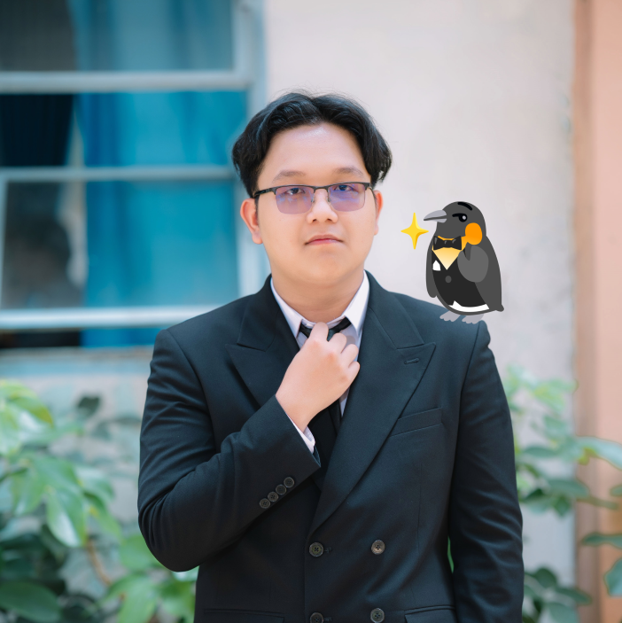

Interested in
Computer Science
Mathematics
Quantum Physics
Quantum Computing

I am a first-year Computer Science student at the University of Information Technology, VNU-HCM.
I am currently exploring mathematics, physics, and computer science.
My long-term academic interests include:
Since I am currently a first-year student, these ambitious goals may evolve over time, but they reflect my genuine passion and current research direction.
Having a background in Specialized Informatics, I have explored a wide range of algorithms. Topics I found particularly fascinating and gave presentations on include:
(Inspired by Paul's Online Math Notes)
A personal collection of mathematics notes written in a lecture-note style.
Topics currently included:
A collection of my solutions and team implementations for various programming competitions.
Currently includes: